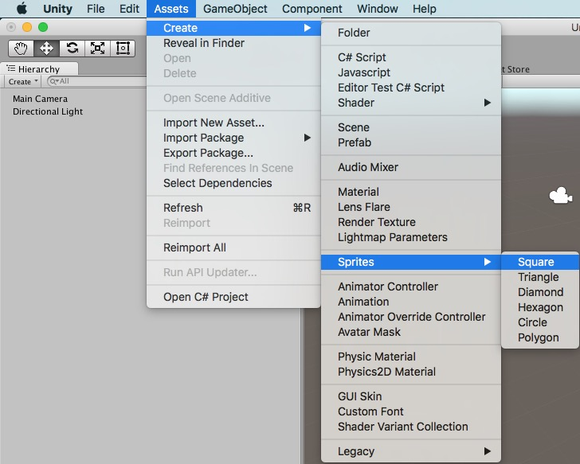
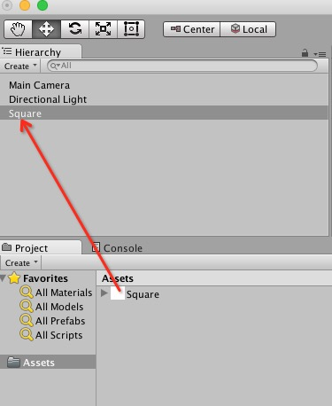
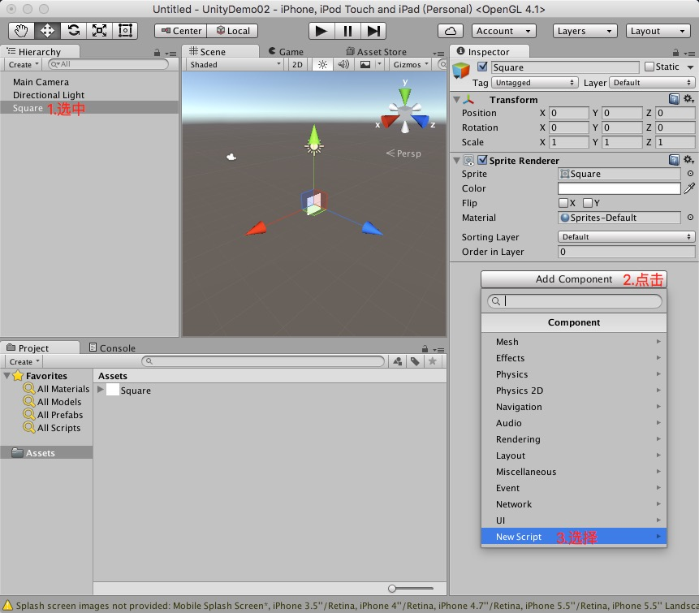

Unity调用iOS方法
参考文章:如何通过unity调用ios原生代码 ，不吝赐教hertz@hertzwang.com
一、Unity部分
1.在Unity工程中新建一个Assets:

2.将Square拖动至Hierarchy:

3.给Square添加一个脚本，输入名字UnitySendMessageToiOS，语言使用默认的 C Sharp：

4.打开UnitySendMessageToiOS脚本添加按钮及点击事件：
1
2
3
4
5
6
7
8
9
10
11
12
13
14
15
16
17
18
19
20
21
22
23
24
25
26
27
28
29
30
31
| using UnityEngine;
using System.Collections;
using System.Runtime.InteropServices;
public class UnitySendMessageToiOS : MonoBehaviour {
[DllImport("__Internal")]
extern static public void unitySendMessageWithString( string str );
void Start () {
print ( "UnitySendMessageToiOS start" );
}
void Update () {
}
void OnGUI () {
if ( GUI.Button( new Rect( Screen.width - 200, 0, 200, 100 ), "Back" )) {
print ( "Unity Button Clicked" );
unitySendMessageWithString ( "Unity Button Clicked" );
}
}
}
|
5.生成Xcode工程
二、iOS部分
1.在UnityAppController.mm里声名并实现外部方法unitySendMessageWithString ：
1
2
3
4
5
6
| extern "C" {
void unitySendMessageWithString(char *message) {
NSString *msg = [[NSString alloc] initWithCString:message encoding:NSUTF8StringEncoding];
[[[UIAlertView alloc] initWithTitle:@"Alert" message:msg delegate:nil cancelButtonTitle:@"OK" otherButtonTitles:nil, nil] show];
}
}
|
2.修改Bundle Identifier用真机运行